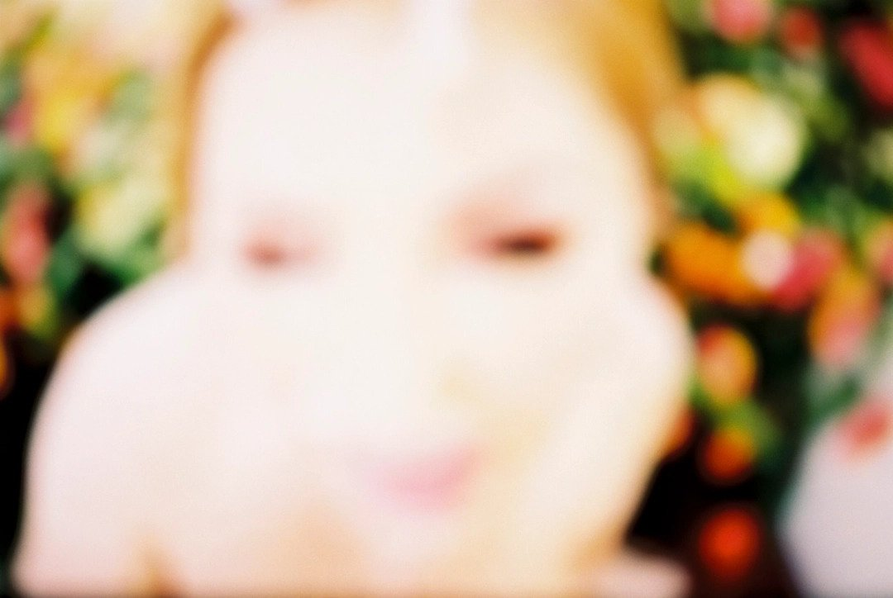

OVERVIEW
BRIEF
Amygdala is a fashion and art magazine that reflects the discordance in both worlds. The goal is to put a spotlight on artists and designers to reveal how their experimental design stimulates the new generation.
My goal was to create a Fashion and Art magazine that personifies experimental work on both sides of the spectrum.
SERVICES
Editorial Design, Logo, Branding, Visualization
ART DIRECTION
Class, Page Layout
Instructor, Bradford Praire
When, Spring 2022
MAGAZINE
ADRENALINE JUNKIE
Spring, Summer 2022
Waist-clinching, future-forward corsets and low-rise curve hugging pants. Designed by Charlotte Knowles and Alexendre Arsenault.

UNDERWATER WORLD
Issue 02
Fall, Winter 2022
From the top of the alps to the ocean floor, discover the mutant fantasy of Dingyun Zhang.
All photos shot by
MICHAEL ANTHONY and CARLIJN JACOBS.
Designers and Artists discussed
ALEXANDRE ARSENAULT, CHARLOTTE KNOWLES,
DINGYUN ZHANG, and VITALI GELWICH.
GALLERY
- 
-

-